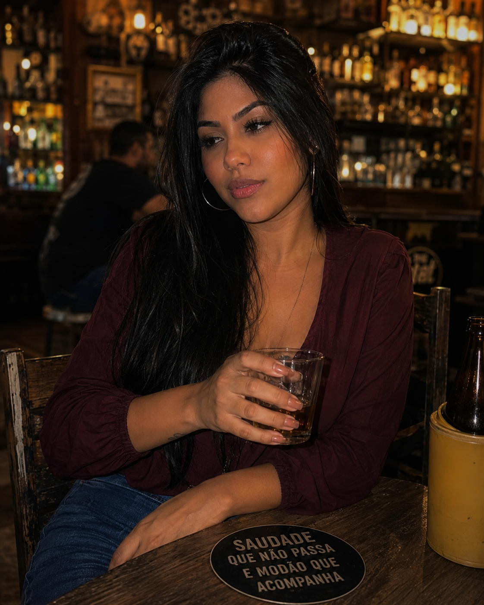

Sofrência • Breganejo • Sertanejo romântico
A saudade tem voz.
Tem amor que vai embora da vida, mas continua morando no peito. Conheça Lara Viana — canções para quem sente tudo até o fim.
Uma voz virtual. Emoções que você reconhece.

O que o peito não esquece...Histórias em forma
de canção.
Três músicas oficiais. Três jeitos de sentir falta de alguém — ou de quem você já foi.
Ouça a músicaAmor Não Sabe Ir EmboraQuando a história termina, mas o sentimento insiste em ficar.▶ Assistir agora ↗
Ouça a músicaMemória Não Tem LixeiraApagar da tela não é apagar de dentro da gente.▶ Assistir agora ↗
Ouça a músicaCadê a Lara Que Eu EraÀs vezes, a saudade mais difícil é da própria versão antiga.▶ Assistir agora ↗
Próximo capítulo
Uma nova música, um novo encontro com a sofrência.
Estreia prevista • 21 de outubro de 2026 • 19h (Bahia)Entre o Bar e a Arena
Acompanhar no canal ↗A noite, a arena e um coração que ainda não aprendeu a ir embora.
“Tem mensagem que acaba. Tem sentimento que não.”
Conheça Lara Viana
Lara Viana é um projeto artístico virtual de música brasileira, com identidade vocal feminina, grave, quente e íntima. Sofrência e breganejo em histórias de amor, saudade e recomeços.
Uma criação musical do DELTΔ MUSIC GROUP. Este site não coleta dados pessoais, não exige cadastro e não usa anúncios.